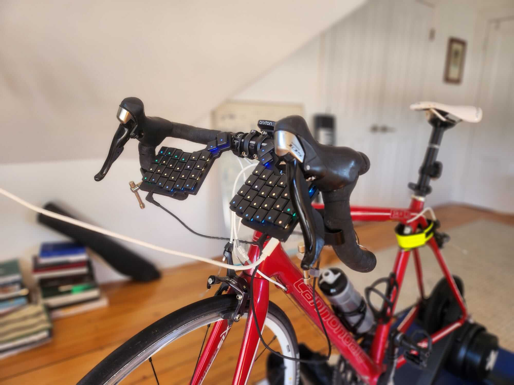

Last summer I got into cycling. I've long been a standing desk-er, and going out for long zone 2 rides and wondering what to think about made me wonder: could I work at a desk while I cycle?
I have a stationary bike trainer, so I first tried the obvious thing and just slid it slightly under my standing desk. This made certain kinds of work doable– watching videos and reading articles– but it makes for awkward and uncomfortable keyboard handling. Even reaching up to hit the 'J' key to scroll down on the browser (as I am a vimium user) interrupted the flow of thought and poise. Attempting to engage with content while cycling also made me realise that these small physical interruptions had an outsized impact on my ability to do anything meaningful. Videos and podcasts were doable in this MVP, but it left a lot to be desired.
A perspicacious user on the Acquired Slack noted that my keyboard was from the ZSA ecosystem, and pointed me towards the tripod mount for their Voyager keyboard. These are essentially two magnets that attach to the backs of the sides of the split keyboard, and as such allow you to mount the keyboard to any standard tripod screw. So I bought a couple of basic camera clamps and waited in anxious suspense for the parts to arrive.
After some basic experimentation, I have found that the most comfortable position to type while cycling is with the keyboard angled down at a 45 degree angle, with the orientation pointed slightly inwards (i.e. so that the lines from each side converge at the frontmost point of the front wheel). This allows me to rest my palms on the handlebars and to extend my fingers pretty naturally over the top of them to reach the keys. There is definitely a bit of wrist awkwardness palpable in this position, and I aim to experiment with other angles and positions as I get more comfortable with the set up.
But the basic approach has opened up a range of other work possibilities while slugging away at zone 2. This article, for example, was entirely written, researched, and hyperlinked from my position here on the bike. (The only exception was when I had to stop cycling periodically to reconfigure my webcam to show the full context of my bike– and to take and link and photo below; and to actually upload the video.) I can code with almost the same fluidity of computer navigation as I can when at my standing desk.
Note that I am a 'vim everywhere' user, meaning that I context-switch and browse web pages entirely via the keyboard. I only occasionally have to reach up and use the mouse when stuck in some janky context where I haven't yet figured out how to enable vim shortcuts– as is the case in switching the OBS scene in the recording above.
